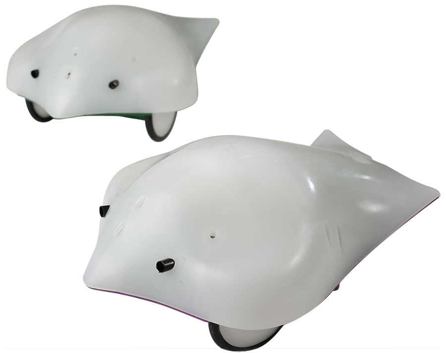

Snap has the ability to connect to several kinds of robots. One relatively simple, but also very useful such robot is called the Finch. As you will see in this lab, the finch has both input and output capabilities that make it a very versatile little machine. You won't actually write much code in this lab - you'll be given examples of what the finch can do, asked to understand the code, and make small modifications to what it does. Hopefully, these activities will inspire you to use the finch to do awesome things on your project!
